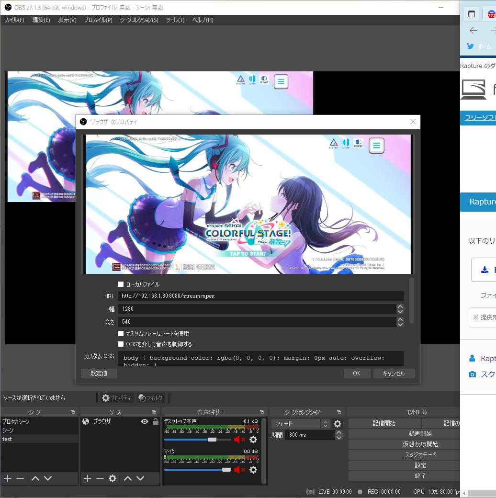

1. ストリームアプリを入れる
スマホにストリームアプリを入れる
私が使用してるのは Screen Stream over HTTP です
Screen Stream over HTTP (リンク)インストールしたら設定します
※端末のアドレス を覚えておいてください。後でOBSで使います
インターフェース
遅い接続を通知する は offをオススメします
Webページのボタンを有効化 は off をオススメします
画像
FPSリミット は ハイスペックでない限り、30前後をおすすめします
JPEG圧縮の品質 も上記同様、80前後をおすすめします (私は60にしてます)
設定が済んだら、画面下の真ん中にある 開始 のボタンを押して
ストリームを開始できます。
2. OBSで追加する
スマホでストリームしている映像を拾います
OBSのシーンで ソースの追加 -> ブラウザ (上から5番目あたり) で追加します
URL : http://(ここにスマホのip):(ストリームしているport)/stream.mjpeg
私の場合 http://192.168.1.30:8080/stream.mjpeg
※幅、高さはスマホによって変えたほうが良い場合があります (stream.mjpeg のサイズを確認したら分かります)
※下記の幅、高さは横画面用です。縦画面はサイズを変更することをおすすめします
幅 : 1280
高さ : 540
これで映せれば完了です。 画面の比率やサイズがおかしい場合
ブラウザを選択して 再読み込み すれば直る場合があります
再読み込み は フィルタ の横にあります